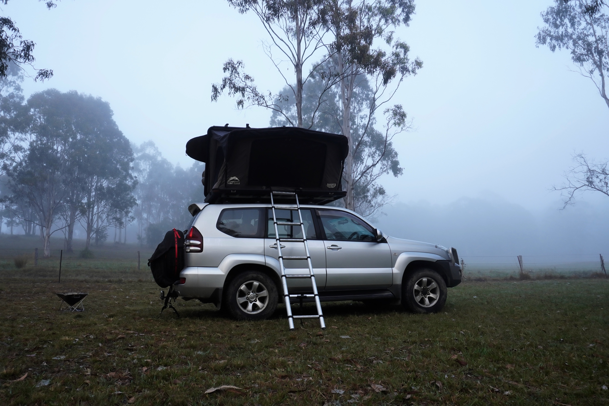

Camping recipes for 3 days - Option 2

Description
A selection of recipes for 3 days of camping in the woods. These recipes are designed to be simple, quick, use similar ingredients and only require limited equipment.
Breakfast
- Toasts
- Fruits
- Acai bowl
Lunch
- Falafel wrap
- Avocado toast
- Mexican salad
Dinner
- Quesadillas
- Burgers
- Hot dogs
Ingredients
- Bread
- 8x wraps
- 4x burger buns
- 4x hot dog buns
- 3x tomatoes
- 1x Lebanese cucumber
- Fruits
- 1x red onion
- 2x brown onions
- 2x capsicums
- 2x avocados
- 2x lime
- 1x lemon
- 1x can of corn
- 1x can of black beans
- 1x mango
- 1x green chili
- 500g mince beef
- Falafels
- 4x sausages
- Tsatziki
- Humus
- Barbecue sauce
- Tacos mix
- Swiss cheese
Breakfasts
Breakfast 1 - Toasts
- Toast the bread on the pan. When ready add the barbecue sauce and set aside.
- Add peanut butter or Nutella.
Breakfast 2 - Fruits
- Cut fruits and place in a bowl.
Breakfast 3 - Acai bowl
- Dice fruits and add to the cereals.
- Add acai.
Lunchs
Lunch 1 - Falafel wrap
- Warm the falafels on the pan.
- Cut the cucumbers into strips.
- Add humus and tsatziki to the wrap. Add falafels and cucmbers.
Lunch 2 - Avocado toast
- Toast the bread on the pan.
- Mash the avocado.
- Add salt, pepper and lime and add to toast.
- Dice the mango and add on top of the avocado.
Lunch 3 - Mexican salad
- Dice the capsicums, 2x tomatos and 1x avocado.
- Drain the corn and black beans and add to the vegetables.
- Add salt and lime.
Dinners
Quesadillas
- Cook 250g of mince beef with the tacos mix.
- Place a tortilla, add cheese, the beef and the rest of the mexican salad.
- Fold in half and cook until the cheese is melted.
Burgers
- Form beef patties with the remaining 250g of mince beef.
- Toast the burger buns on the pan.
- Cook the patties on the pan and place on the buns.
- Slice the tomato and place on top.
- Add swiss cheese and barbecue sauce.
Hot dogs
- Caramelise the onions in the pan.
- Cook the sausages.
- Place in the hot dog buns and add barbecue sauce.
Back to home